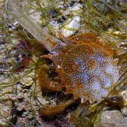
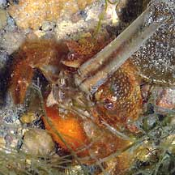
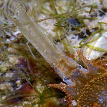

|
|
| crustaceans text index | photo index |
| Phylum Arthropoda > Subphylum Crustacea > Class Malacostraca > Order Decapoda |
| Masked
burrowing crabs Family Corystidae updated Oct 2016 Where seen? These small funny-looking crabs are sometimes seen on our shores, among seagrasses and near reefs. Features: Body about 3cm. The body is oval and abdomen folded beneath. Antennae are very long and feather-like, legs flattened and spade-shaped. They are usually buried in the sand with only their antennae sticking out. The interlocking hairs on the antennae probably form a breathing tube for the buried crab. Status and threats: The species Gomeza bicornis and Jonas formosae are listed as 'Vulnerable' on the Red List of threatened animals of Singapore. |
|
 Gomeza bicornis Labrador, Dec 04 |
 Carrying eggs on the abdomen. |
 Interlocking hairs on the antennae may form a breathing tube when the crab is underground. |
| Masked burrowing crabs on Singapore shores |
On wildsingapore
flickr
|
| Other sightings on Singapore shores |
References
|